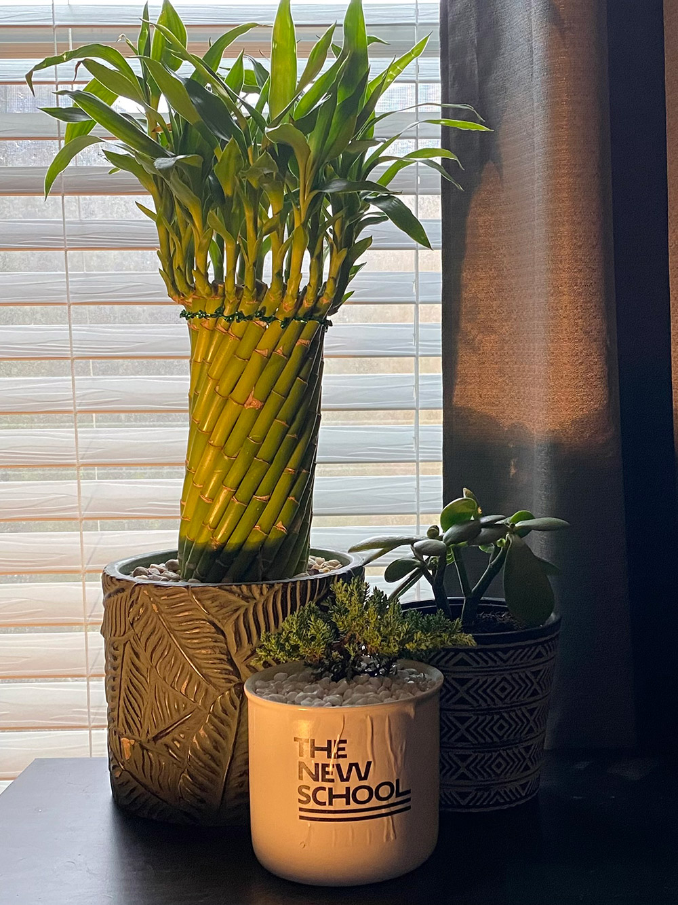
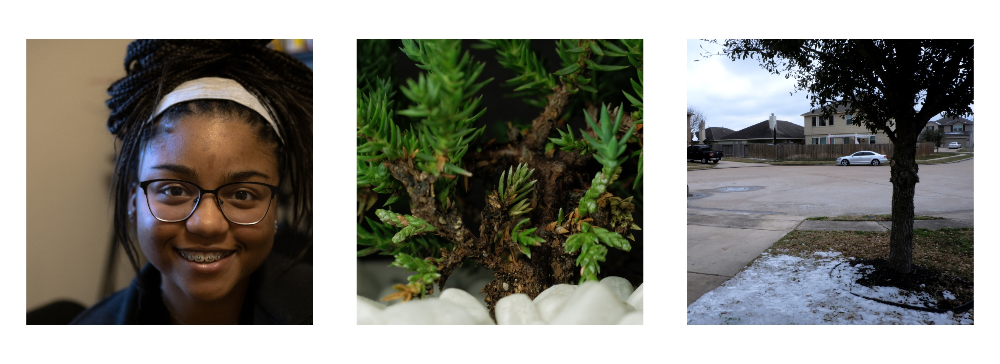

📸Aiden LaBruno's Photos📸
Homepage
This page was created to showcase photographs along with the ability to resize and add images onto a webpage. The pictures below are of three plants in my room that have been resized according to the assignment guidelines.



More photos for this class down below. Enjoy! 😄


-
This is a photo of my backyard overexposed and then corrected to the best it can.

-
Here is a photo of a painting I made a few years back.

-
Here is a banner, featuring a portait of my girlfriend Olivia, a macro shot of a juniper bonsai, and a wide shot of my neighborhood area.
-
This is my version of a group photo, just my dog Epiphany and my father Andrew.

-
The last photo of this entry is featuring Olivia, with the juniper bonsai as a backround, and the painting as her headband.